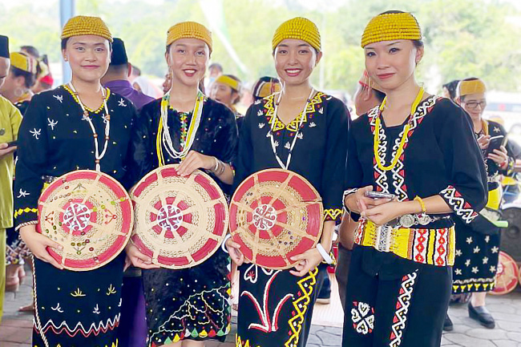
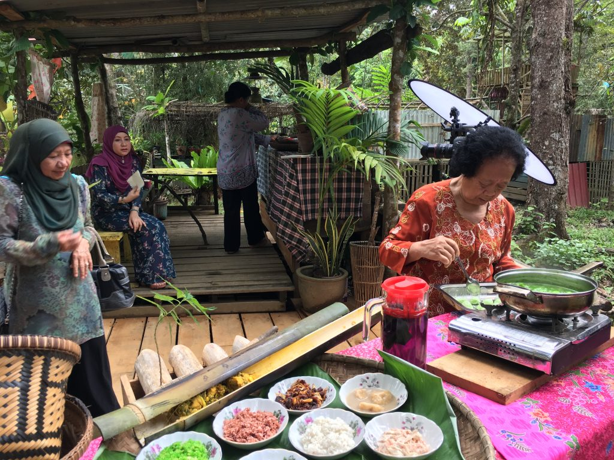
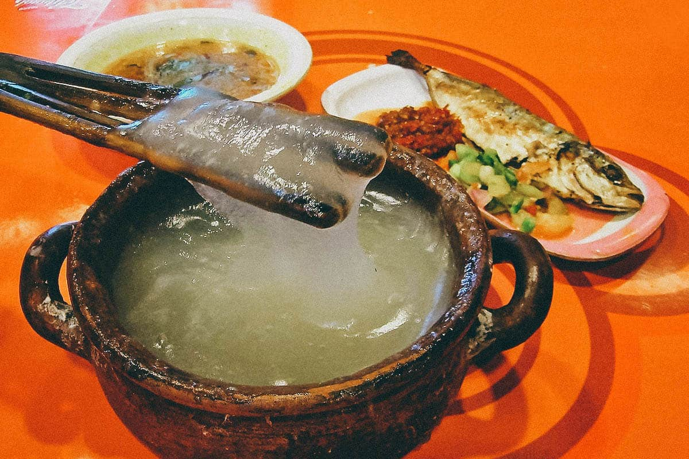

Learn More

Royal Heritage & Philosophy
Brunei’s national identity is firmly rooted in the concept of Melayu Islam Beraja that harmonizes traditional Malay culture, Islamic jurisprudence, and the revered leadership of the Monarchy.
Visitors can experience this unique heritage through magnificent royal institutions, historical exhibits and the exquisite traditional hand-woven textiles (Tenunan).

Local Customs & Etiquette
Travelers should observe local traditions by dressing modestly when visiting religious sites or rural villages, removing footwear before entering residential homes or mosques, and using the right hand when exchanging items, gifts, or currency.

Authentic Bruneian Cuisine
Culinary traditions in Brunei reflect a rich blend indigenous Borneo and Malay Influenced. The national dish, Ambuyat, is a unique starchy delicacy extracted from the trunk of the sago palm.
It is traditionally eaten using bamboo forks called *chandas*, it is also served with a dip that is savory, spicy, and contains sour fruit-based sauces (*cacah*), accompanied by grilled fish, fresh local greens, and aromatic sambal.